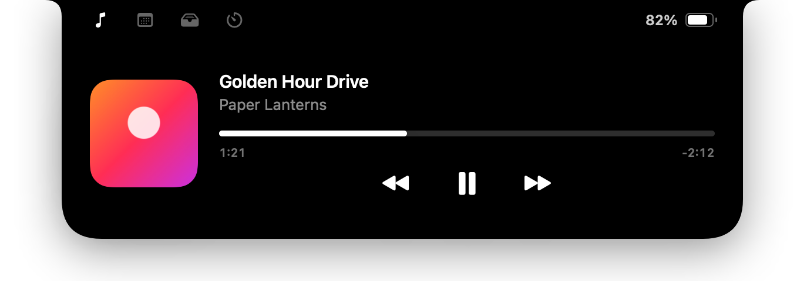
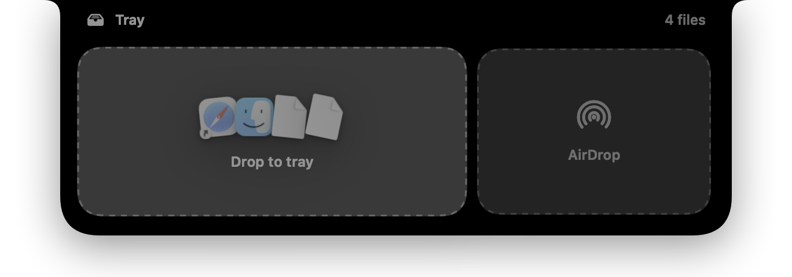
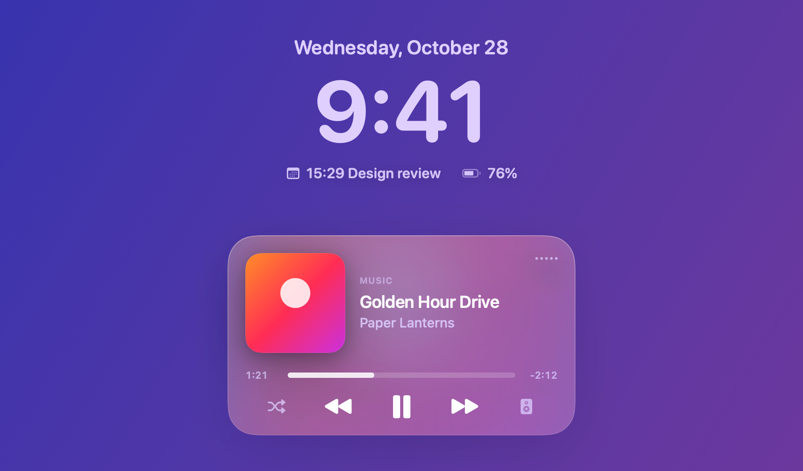
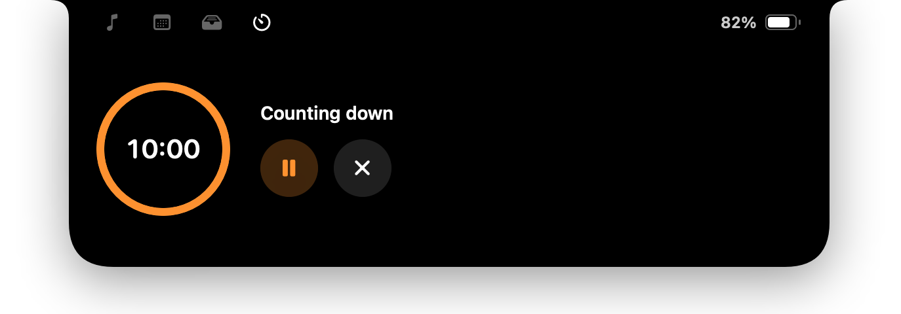
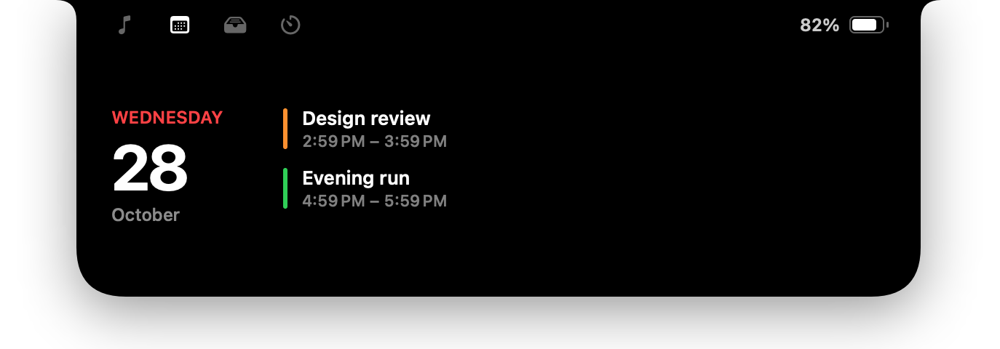

Now Playing
Music and Spotify with cover art, a scrubber and controls. Swipe sideways on the trackpad to skip.
Free & open source · macOS 15+
Inlet turns the camera notch on your MacBook into a quiet, living strip for music, files, timers and the small alerts you’d otherwise miss.
Real screenshots from the app. Nothing here is a mockup.

Music and Spotify with cover art, a scrubber and controls. Swipe sideways on the trackpad to skip.

Bring a file toward the notch and the tray opens. Park it there, or drop it straight onto AirDrop.

A Now Playing card and two small widgets of your choice — Focus, weather, battery or your next event.
Volume and brightness glide out of the notch instead of landing on top of your work.

One tap for 1, 5, 10 or 25 minutes. The countdown stays in the notch.

Today’s events with a nudge five minutes before, plus charging, low battery, AirPods and Caps Lock — each for a moment, then gone.
A few decisions behind Inlet, and the reasons for them.
Every motion starts from where it is and can be reversed halfway, so the island feels physical instead of scripted. Bounce only appears when your swipe gave it momentum.
Hover-to-open is one switch away, but off at first: moving your cursor across the menu bar shouldn’t throw panels at you.
macOS doesn’t deliver drag-and-drop to windows above the lock screen. So the island you use all day is a normal window, and a twin takes over only while your Mac is locked.
The tray points to your files instead of duplicating them. Nothing piles up on disk, and files stay exactly where they are.
AirPods open short background connections all the time. Inlet only speaks up once audio is actually routed to them.
Forecasts come from Open-Meteo — free, no API key. The city you type is the only thing that leaves your Mac.
Calendar, Bluetooth and Full Disk Access are requested only for the features that need them. Skip one and the rest keeps working.
SwiftUI and AppKit. No Electron, no web views, no analytics SDKs — just a small app that stays out of the way.
Download Inlet.zip from the latest release and unzip it.
Move Inlet.app to your Applications folder.
The first time, right-click Inlet and choose Open — builds aren’t notarized yet.
Yes. Inlet is open source under the MIT license — use it, change it, share it.
Any Mac on macOS 15 or later. It’s designed around the MacBook notch; on other displays a small island sits under the menu bar, and you can turn that off.
Builds aren’t notarized yet. Right-click the app and choose Open, or run xattr -dr com.apple.quarantine /Applications/Inlet.app in Terminal.
Apple Music and Spotify. macOS asks once for permission to let Inlet talk to them.
No. There are no analytics and no account. The only network request is the weather widget, which sends the city you chose to Open-Meteo.
Most features use public APIs. The lock-screen window and the brightness HUD rely on private macOS interfaces that Apple could change; if that happens, those two pieces may pause until Inlet is updated.
English and Turkish, following your system language — or pick one in Settings. Translations are welcome on GitHub.